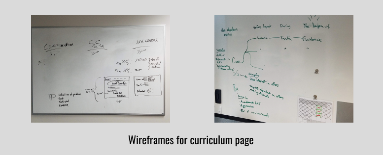

Aim High Impact is an Applied Behavior Analysis (ABA) therapy clinic that serves the local Portland community of families that are affected by Autism.

Aim High Impact is an Applied Behavior Analysis (ABA) therapy clinic that serves the local Portland community of families that are affected by Autism.
Impact provides a service that teaches intellectually challenged children the life skills they need to survive and thrive on their own and in their communities. The service provided is great, but prior to the redesign, the organization’s website did not showcase this effectively. This is why I was tasked to redesign Impact’s website.
The problem AH Impact faced was that their original website shared little and somewhat scattered information about what the organization is all about. Before the redesign, one comment someone mentioned was that the website did not properly serve as its primary hub to the company’s targeted audience. A lack of content and visual design did not assist in conveying what Impact had to offer.
Our goal of the redesign was to help increase the viewership and interaction within the website. The desired outcome included getting potential clientele and employees to reach out to Aim High Impact for services and service information. Another desired outcome included ways to provide information and resources for the current families that utilize the services Aim High Impact offers.
After the redesign, families impacted by autism and those who aid these families should easily be able to access this website and find what resources they are looking for.
The team involved in the redesign consisted of the clinical director, case manager, marketing manager and the web designer (me). We all contributed different thoughts and components that helped reshape the visual representation of the website.
About 99% of the actual redesign was tasked for me to construct, and this eventually led to some hurdles during the process. The biggest issue I encountered was the mere 4 hours I had available each week to work on this project. Although I was hired as their web designer, I was hired originally a year before as a behavior therapist. I still dedicated my time to the 9-5 schedule as a behavior therapist, and as an hourly-paid employee, they advised I couldn’t go overtime. This ultimately left me an hour at the end of the day, minus Monday’s which were dedicated to all-staff meetings, so a total of 4 hours out of the 40 hour work week. Luckily, I was still able to finish many of the revisions after 3 months of being inducted as the web designer.
The start of the project happened right after I was inducted into the position as a web designer for Aim High Impact. Creating this position for me was to work on redesigning/recreating the website along with troubleshooting minor technology difficulties around the clinic. The first initial meetings for redesigning the website included what my job duties were, how many hours I was able to work on the project, and also what ideas we had to improve the website. Since none of the team members had no prior experience with designing websites, I collected everyone’s ideas and priorities and created an initial audit checklist to map out what had to be done.

We discussed that minimal traffic was going towards the website, and so there was a mutual agreement that we should try as many different strategies as possible to see if it would increase the viewership for our audience.
Before any meeting with the marketing manager was set to discuss what the first steps were, I compared the previous website to similar organizations that specialize in behavioral therapeutic services. I also understood that the website was created and hosted through Squarespace, so documentation (and YouTube!) on how to use the Squarespace made learning how to use the web application easy. I presented what I already had in mind to the manager and he agreed to give me full reign on the reconstruction of the website.
I realize that the home page of any website needs to grab the attention of the viewer, and the initial home page for Impact’s website didn’t do that for me. This became my first priority to redesign. The first thing you would’ve seen was the use of a stock picture for the banner. It was a blown up picture of random puzzles pieces, and although the puzzle piece is the primary symbol for autism (which is mentioned in this article), it doesn’t highlight what Aim High Impact does as a company. I wanted to showcase what Impact offers for the clients they serve, and after working with a lot of our clients I wanted others to see the amazing things these kids can do. Replacing the puzzle banner with in-action photos would paint a better picture of what Impact’s services entail.

After scrolling down the page I noticed that a huge chunk of plain text was the only visual explaining the organization’s services. There was no visual appeal, the font was really tiny to read, and everything was one big mass. To resolve this issue, I remembered from an old psychology class I took about the term “chunking”; by forming small pieces of information into groups rather than a whole helps people memorize the info better and faster. I used this same concept to break the big chunk of plain text into smaller chunks of information, added in-action pictures of our clients to help as visual aids, and increased the size of the font. I wanted to ensure the reader would be able to clearly see and read what our organization offers.

The curriculum page was one of the last and longest pieces that I had worked on, taking me a few months to complete. This was mainly due to a ux interview discussion with my clinical director about the insurance companies that offered coverage for our clients. We both agreed that these insurance companies would be our primary audience for this page. The conversation can be summed up as follows:
If the website content misrepresents or falsifies the therapy we offer, it would prevent insurance companies from providing coverage for the families we serve.
Thankfully, the therapy Impact provides is evidence-based, so data is taken all the time during each therapy session to prove that the therapy works. The problem, however, was creating a curriculum web page that showcased an accurate reflection of what the insurance companies wanted to see. I had no idea what needed to be included in this page, so I pieced fragments of information together from the clinical director, clinical manager and marketing manager to include content and the layout for the page.
We eventually came up with a simple design I could work with, and over time I was able to design and develop a page that everyone was content with, including a verbal approval from our clinical director that the page is up to the standard that the insurance companies want. So far there has been no complaints (Thankfully!).

For the Edge, Ignite and Access pages, I did a redesign for all three, focusing on adding visual images and pairing them with the text that were already included on the pages, much like what I did with the home page. I also was asked by the team to make new pages about the organization’s summer camp program and also a resource page that told parents more information about Autism. This took a few weeks to do, but there were no constraints to doing them.
I made a majority of the edits to the website by the end of May 2018, and by July 2018 we had a growing flow of prospective clients inquiring for more information through our contact links of our website and expressing their interest in enrolling their children in our programs. This led to:
- The creation of a waiting list for families wanting to utilize our services because we were at max capacity of how many clients we can take in.
- As of September 2019, we had increased our staff of behavior therapists to balance out the increase of clients we can take by 20%. Most of the staff hired utilized the website to find out more about our organization.
After finishing a majority of the redesign, I saw an increase of clients and employees added into our organization. This gave me confidence that the work I put in made a difference for the organization I work for. I learned how to utilize novel design tools and Squarespace because of this experience. I also have a better understanding of navigating conversations with my team to extract the right information I need for specific components for the web pages I work on. I accumulated knowledge about strategy and execution for redesigning a website, which I can take with me and utilize on other projects. I am confident that I have the tools to design and create effective websites for small businesses.